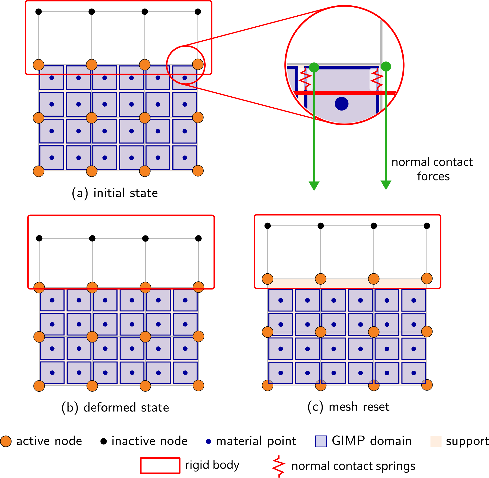
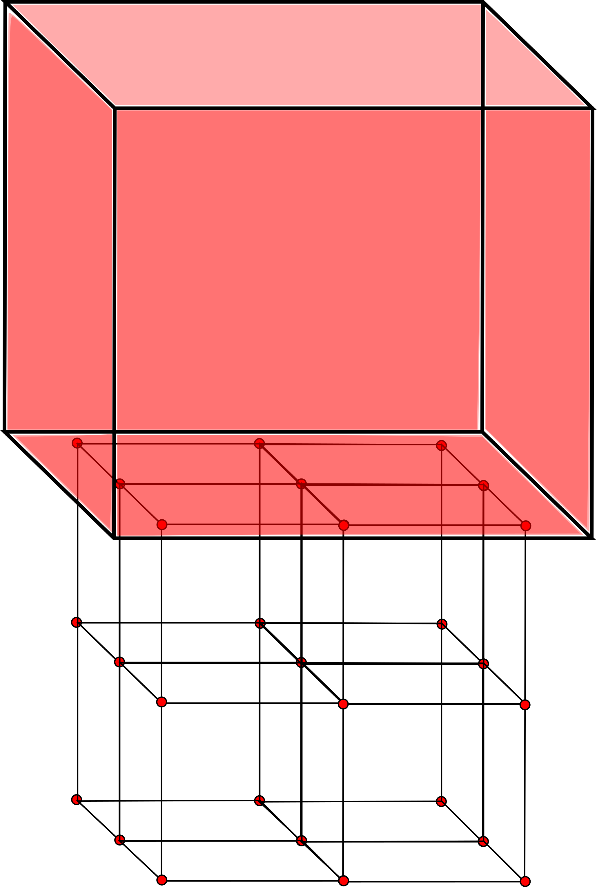
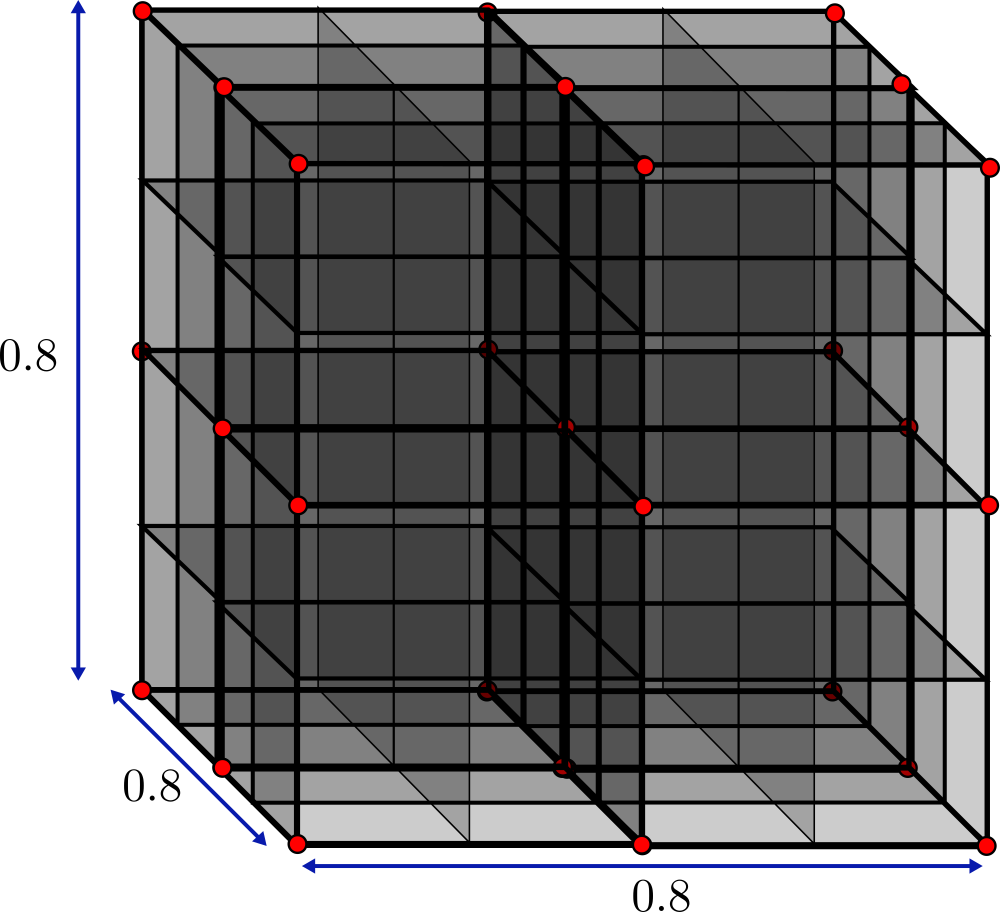

Tutorial 2: Compaction via a rigid body¶
Introduction¶
This quick start tutorial introduces the concept of a rigid body interacting with the material points.
This tutorial analyses a cube of soil compressed by a rigid platen through 25% of its height, and is used to validate that the contact formulation produces the expected uniform vertical stress field. This problem has been used to validate our contact formulation 1 and our adaptive-octree extension 2.
This tutorial has three main sections after the introduction:
Background: rigid-body contact¶
This tutorial extends Tutorial 1 to include normal contact. A brief overview is provided here for context; see equilibrium with rigid-body contact for the full technical details. Figure 1 provides a schematic overview of how the contact between the rigid body and the material points works.
When contact is detected between a GIMP and the rigid body, (a) initial state, a normal contact force is applied at the corners of the GIMP's domain to resist the overlap. This force is proportional to the amount of overlap and can be thought of as a spring whose stiffness resists the overlap. S3-MPM calculates the spring stiffness automatically from the GIMP size and material properties,
where \(E_p\) is the smallest Young's modulus of the GIMPs in the element and \(A_p^0 = (V_p^0)^{2/3}\) is a representation of the contact area, with \(V_p^0\) the initial GIMP volume. A tangential stiffness of \(25\, E_p\, A_p^0\) is used for friction. The springs are stiff but not rigid, so a small overlap between the rigid body and the GIMPs remains - a few millimetres in this problem.
After the springs have been activated the GIMPs and the mesh deform due to the contact forces created by the springs, (b) deformed state, and once convergence is obtained the mesh is reset, (c) mesh reset.

Input setup¶
Problem summary¶
The aim is to introduce the set-up and modelling of soil-structure interaction problems. The problem is a deformable cube compressed by a rigid platen. Although simple, it is essential, as it validates the contact formulation by confirming that the overlap between the two bodies stays small and that the resulting vertical stress field is uniform throughout the cube and matches the analytical Hencky solution for the Cauchy stress in the vertical direction
where \(L_0 = 0.8\) m is the initial cube height, \(\Delta z = -0.2\) m is the prescribed compression and \(L = L_0 + \Delta z = 0.6\) m is the final height after the \(25\%\) axial compression.
As in Tutorial 1 the material is homogeneous Hencky elastic, here with \(E = 10^6\) Pa, \(\nu = 0\) and \(\rho = 1000\) kg/m\(^3\). The cube is discretised by a uniform \(0.4\) m mesh (\(2 \times 2 \times 2 = 8\) elements) with a \(2 \times 2 \times 2\) grid of GIMPs per element. Roller boundaries are imposed on the four side faces and the base, and the top face is left free for the platen to push on.
The rigid platen is a \(1.2 \times 1.2 \times 1.0\) m box that overhangs the top of the cube on every side. It starts resting on the cube and is pushed down \(0.2\) m over 20 load steps.
Gravity is included. S3-MPM measures convergence relative to the weight of the soil, so every analysis needs gravity; here the weight of the soil adds at most \(\rho g L_0 \approx 7.8\) kPa at the base, about \(2\%\) of the stress from the platen.


The simulation is configured through a single JSON object - a human-readable, editable text file. It extends Tutorial 1 with a rigid body. The complete file for this problem, and the platen geometry, can be found here, and every key is described on the input_data.json file format page.
input_data.jsonMachine and domain¶
"GPU": "off" runs the analysis on the CPU.
"domain update": "stretch" lets the GIMP domains shrink as the cube is compressed. Without it, the domains keep their initial size, and the GIMPs next to the base cannot move closer to it.
The background mesh must hold the cube and the same height of empty space above it, so it is a cube of side \(1.6\) m, the same as "size".
Material points¶
The soil is one \(0.8\) m layer on a \(0.8 \times 0.8\) m footprint, discretised by \(0.4\) m elements with \(2 \times 2 \times 2\) GIMPs in each, using the elastic properties from the Problem summary.
Rigid body¶
A rigid body is a system of one or more points. Each point has six degrees of freedom - three displacements and three rotations - and carries a mass and rotational inertia. The platen is a single point at its centre, \((0.4, 0.5, 1.3)\) m.
Its "boundary conditions" list the six degrees of freedom in the order \([u_x, u_y, u_z, \theta_x, \theta_y, \theta_z]\). Five are "fixed", and the vertical displacement is prescribed as \(-0.01\) m per load step, so the platen moves \(0.2\) m down over the 20 load steps. Because every degree of freedom is held, the mass and inertia have no effect.
The geometry comes from platen.stl, welded to point 1. It is drawn in global coordinates - the same frame as the point - with its base on the top of the soil. On the first run S3-MPM builds a tetrahedral mesh of the platen and stores it in platen_mesh.txt for later runs.
"rigid bodies": [
{
"points": [
{ "position": [0.4, 0.5, 1.3], "mass": 1.0, "rotational inertia": [0.2, 0.2, 0.24],
"boundary conditions": ["fixed", "fixed", { "prescribed": -0.01 }, "fixed", "fixed", "fixed"] }
],
"stl files": [
{ "name": "platen", "stl": "platen.stl", "mesh cache": "platen_mesh.txt", "point": 1 }
]
}
]
Contact¶
The contact between the platen and the soil is frictionless. The contact stiffness is set automatically, as described in the Background.
Analysis¶
A single static stage of 20 load steps with the rigid body switched on. "load": "full" applies gravity in full from the first step, while the platen is pushed down a little further at every step.
"rigid body surface placement": "on" moves the platen vertically at the start of the stage so that its base rests exactly on the top of the soil. Rollers are applied on the four sides and the base, and the top is free.
Solver¶
The same settings as Tutorial 1: Newton-Raphson iterations to a tolerance of \(10^{-6}\), and no ghost stabilisation, because the cube fills its elements completely.
Output¶
VTK and CSV output at every load step. The CSV files record each GIMP's position, domain size ("lp") and stress, and the platen's position and reaction force - the force needed to push it - which are used in Analysing the stress in the domain.
"output": {
"vtk": "on",
"vtk directory": "vtk_cube",
"vtk percent": 0,
"vtk material point fields": ["displacement", "stress", "strain"],
"vtk rigid body fields": ["position", "reaction force"],
"csv": "on",
"csv directory": "csv_cube",
"csv percent": 0,
"csv material point fields": ["initial position", "position", "lp", "stress"],
"csv rigid body fields": ["position", "reaction force"]
}
Deploying and running the problem¶
S3-MPM is written in the Julia programming language, and there are two ways to run the code, both explored on the deployment page. As this is a small problem that runs quickly, this tutorial uses Julia directly; see the installation guide for installing Julia and S3-MPM.
terminalSetting up and running the problem¶
Create a folder for the run containing two files, both provided here:
input_data.json;platen.stl, the geometry of the platen.
The STL path in the input file is relative to the input file, and the output folders vtk_cube and csv_cube are created in the folder Julia is started from.
As in Tutorial 1, open a terminal in the run folder, start Julia with the S3-MPM project active and load S3-MPM.
Running the problem¶
With Julia running in the run folder and S3-MPM loaded, start the simulation:
Reading the output¶
Before the first load step, S3-MPM reports the rigid body surface placement: the lowest point of the platen (body base) and the top of the soil (material top) are both at \(0.8\) m, so the platen is moved by just Δz = 2.23517e-8 m, a small tolerance above the soil.
The progress line then works as in Tutorial 1. The load fraction t rises by Δt 0.05 per load step, each step converges in 3 or 4 Newton-Raphson iterations (NR), and no steps are cut or material points deleted. The background mesh has N 46 nodes.
julia> S3MPM.non_linear_solve("input_data.json");
[ Info: rigid body surface placement: body base 0.8 → material top 0.8 Δz = 2.23517e-8
stage 1/1 ████████████ 100.0% t 1.0/1.0 step 21 Δt 0.05 NR 4 cuts 0 del 0 N 46
In a log file, the progress lines are kept:
stage 1/1 █░░░░░░░░░░░ 5.0% t 0.05/1.0 step 2 Δt 0.05 NR 3 cuts 0 del 0 N 46
stage 1/1 █░░░░░░░░░░░ 10.0% t 0.1/1.0 step 3 Δt 0.05 NR 3 cuts 0 del 0 N 46
stage 1/1 ██░░░░░░░░░░ 15.0% t 0.15/1.0 step 4 Δt 0.05 NR 3 cuts 0 del 0 N 46
...
stage 1/1 ███████████░ 90.0% t 0.9/1.0 step 19 Δt 0.05 NR 4 cuts 0 del 0 N 46
stage 1/1 ███████████░ 95.0% t 0.95/1.0 step 20 Δt 0.05 NR 4 cuts 0 del 0 N 46
stage 1/1 ████████████ 100.0% t 1.0/1.0 step 21 Δt 0.05 NR 4 cuts 0 del 0 N 46
Viewing the results¶
The simulation results appear as the simulation runs, so you do not need to wait until it has finished. vtk_cube holds three series of files, numbered from 00002 to 00021: mps_1_...vtu for the GIMPs, surface_...vtu for the surface of the platen and body_...vtu for the platen's point.
Visualising the output in ParaView¶
The walkthrough below follows the same pattern as the ParaView walkthrough from Tutorial 1, but also loads the surface of the platen, and finishes by hiding it so that the compressed cube can be inspected on its own. The same 3D-navigation controls (left-drag to rotate, scroll to zoom) apply throughout.
1. Open ParaView. Launch ParaView from your applications menu or terminal. You should see an empty render view with the orientation axes in the bottom-left corner.
Placeholder: ParaView screenshot
img/tutorial_2/paraview_1.png - ParaView on launch, with an empty render view.
2. Open the output files. Use File → Open and navigate to vtk_cube. Hold Ctrl and click the mps_1_..vtu and surface_..vtu series so both are highlighted, then click OK.
Placeholder: ParaView screenshot
img/tutorial_2/paraview_2.png - the Open File dialog with both series selected.
3. Apply the readers. Click Apply in the Properties panel. The cube of GIMPs appears with the platen sitting on top of it. The platen overhangs the cube, so rotate the view to see both bodies.
Placeholder: ParaView screenshot
img/tutorial_2/paraview_3.png - the cube of GIMPs with the platen resting on top.
4. Make the platen see-through. Select surface_..vtu and change its Representation to Wireframe, so that the GIMPs beneath it can be seen.
Placeholder: ParaView screenshot
img/tutorial_2/paraview_4.png - the platen drawn as a wireframe over the GIMPs.
5. Colour the GIMPs by vertical displacement at the final step. Select mps_1_..vtu, change Coloring to displacement → Z, click Go to Last (▶|) and then Rescale to Data Range. The platen has moved \(0.2\) m down, and the displacement of the GIMPs increases evenly from the base to the top of the cube.
Placeholder: ParaView screenshot
img/tutorial_2/paraview_5.png - the compressed cube coloured by vertical displacement, with the platen at its final position.
6. Inspect the final stress distribution. Click the eye icon next to surface_..vtu in the Pipeline Browser to hide the platen. Change the GIMPs' Coloring to stress → ZZ and click Rescale to Data Range. The colour is almost the same throughout the cube - the visual signature of the uniform vertical stress predicted by the Hencky solution in the Problem summary.
Placeholder: ParaView screenshot
img/tutorial_2/paraview_6.png - the compressed cube, with the platen hidden, coloured by vertical stress.
7. Look at the contact force. Show surface_..vtu again, change its Representation back to Surface and colour it by contact force → Z. The load is carried by the triangles of the platen's base, which is in contact with the soil.
Placeholder: ParaView screenshot
img/tutorial_2/paraview_7.png - the platen coloured by the vertical contact force on each triangle.
Analysing the stress in the domain¶
csv_cube/rigid_body.csv has one row per load step for the platen's point, body1. The time column is the load fraction, body1_position_z is the height of the platen's centre and body1_reaction force_z is the vertical force needed to push the platen down, in N:
time,body1_position_x,body1_position_y,body1_position_z,body1_reaction force_x,body1_reaction force_y,body1_reaction force_z
0.05,0.4,0.5,1.290000022351742,0.0,0.0,5542.940609787619
0.1,0.4,0.5,1.280000022351742,0.0,0.0,13865.821975158773
...
1.0000000000000002,0.4,0.5,1.1000000223517419,0.0,0.0,234663.3242756344
The GIMP files, csv_cube/mps_1_00002.csv to mps_1_00021.csv, have the same layout as in Tutorial 1, with the addition of the domain half-widths lp_x, lp_y and lp_z.
The Python script below, run from the run folder, compares the final state with the analytical solution. It needs NumPy.
import csv
import math
import numpy as np
def read_csv(path, skip=0):
with open(path) as f:
rows = list(csv.reader(f))[skip:]
return rows[0], np.array(rows[1:], dtype=float)
# the soil at the final load step (the first line of the file is the time)
header, soil = read_csv("csv_cube/mps_1_00021.csv", skip=1)
z = soil[:, header.index("position_z")]
lp_z = soil[:, header.index("lp_z")]
stress_zz = soil[:, header.index("stress_zz")]
# the platen: one row per load step
header, platen = read_csv("csv_cube/rigid_body.csv")
force_z = platen[-1, header.index("body1_reaction force_z")]
base_z = platen[-1, header.index("body1_position_z")] - 0.5 # the platen is 1 m tall
E, L0, area = 1.0e6, 0.8, 0.8 * 0.8
L = np.max(z + lp_z) # final height of the soil
print(f"final soil height {L:.4f} m (overlap {1000 * (L - base_z):.1f} mm)")
print(f"mean vertical stress {stress_zz.mean() / 1000:.1f} kPa")
print(f"Hencky at that height {E * math.log(L / L0) * L0 / L / 1000:.1f} kPa")
print(f"platen force / area {-force_z / area / 1000:.1f} kPa")
For this run it prints:
final soil height 0.6046 m (overlap 4.6 mm)
mean vertical stress -370.6 kPa
Hencky at that height -370.6 kPa
platen force / area -366.7 kPa
The platen overlaps the soil by \(4.6\) mm - about \(0.6\%\) of the cube's height - so the soil is compressed to \(0.6046\) m rather than \(0.6\) m. At that height the Hencky solution gives \(-370.6\) kPa, matching the mean stress in the GIMPs; the full \(0.2\) m of compression would give the \(-383.6\) kPa of the Problem summary, \(3.4\%\) more.
The stress is nearly uniform: every GIMP lies between \(-367.5\) and \(-373.5\) kPa, and the small variation comes from the weight of the soil. The platen force divided by the area of the cube gives the stress at the top of the soil, \(-366.7\) kPa; adding the average weight of the soil above each GIMP, about \(3.9\) kPa, recovers the mean stress of the GIMPs.
To see the effect of the mesh, set "element size" in Material points to 0.2 and compare the overlap and the stresses.
-
Robert E. Bird, Giuliano Pretti, William M. Coombs, Charles E. Augarde, Yaseen U. Sharif, Michael J. Brown, Gareth Carter, Catriona Macdonald, and Kirstin Johnson. A dynamic implicit 3D material point-to-rigid body contact approach for large deformation analysis. International Journal for Numerical Methods in Engineering, 2025. ↩
-
Robert E. Bird, William M. Coombs, Charles E. Augarde, Giuliano Pretti, and Ted J. O'Hare. An implicit octree-based adaptive material point method. 2026. URL: https://arxiv.org/abs/2606.09275, arXiv:2606.09275. ↩